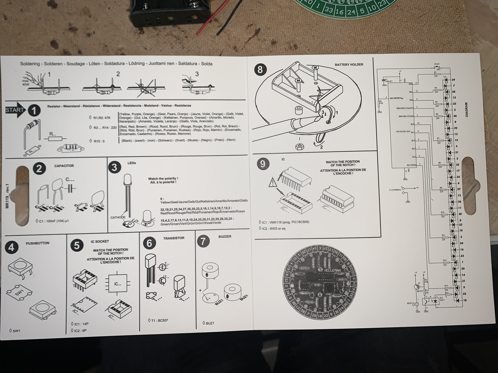
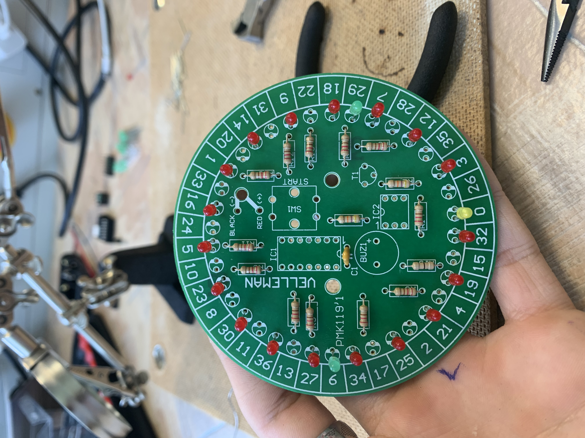
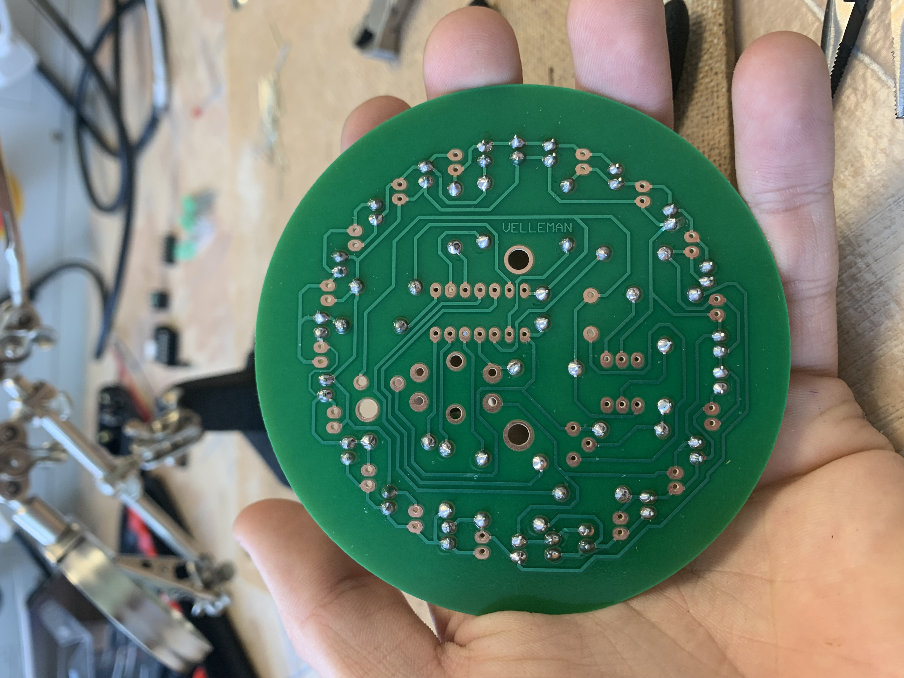
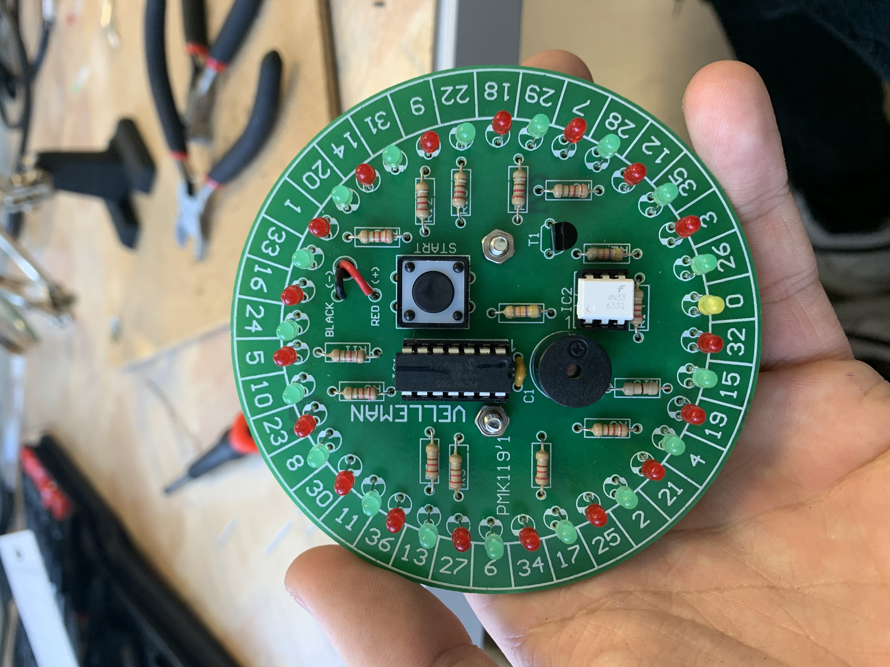
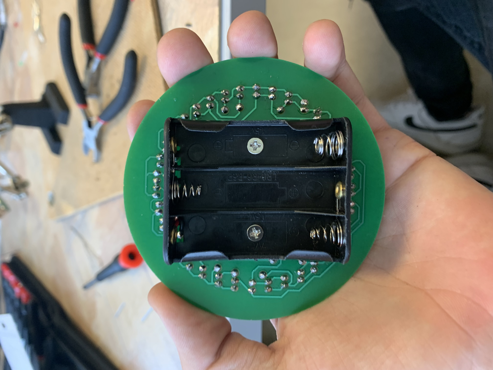

Kezdésnek Tanárúr kiosztotta a rulettet tartalmazó dobozt melyben megtaláltuk a tartozékait. Miután megkaptuk, kevttük belőle az alkatrészeket és szétszeparáltuk őket külün-külön.

Majd neki kezdtünk hogy a rajz alapján beforrasszuk őket a nyákba.
Először az ellenállásokkal kezdtük, melyeknek a lábait meghajlítottuk 90fokban és letisztítottuk róluk a gyári ragasztót. Ezek után rajzot követve behelyeztük őket és becineltük ezekt. Ellenállások után következtek a LED-ek. Melyen megnéztük, hogy melyik az anód és katód, ezután ennek és a rajznak megfelelően ezekt is elkezdtük belehelyezni a nyákban. Kezdésnek 4 LED-et helyeztünk és forrasztottunk be, hogy ezek mint tartók funkcionáljanak nekünk, így a többi LED-et úgy tudtuk behelyezni, hogy egy síkban legyen a többivel.
 Ezt követően a rajzot követve belehelyeztük a többi alkatrészt is. Majd rászereltük a hátára a 3db 1.5Voltos elem tartót.
 Ezzel készen is voltunk majd elem behelyezése után letesztelük a működését.
A rajz és Tanárúr segítségével könnyedén eltudtam készíteni, egyedül a szépítés volt több idő (LED-ek azonos magasságba állítása). Az elje nehézkesen indult, de hamara ráállt a kezem az aprólékos forrasztásra. Igazán nehézséget nem találtam magamnak benne szerencsére. Nagyon jó gyakorló és türelem feladat volt!